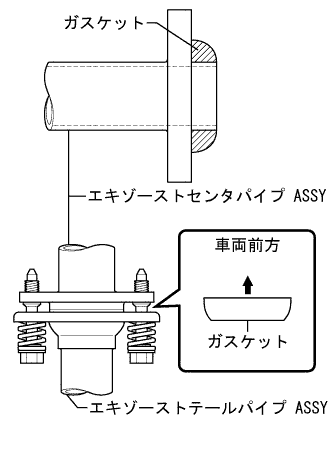

Propeller Shaft with Center Bearing Assembly (4WD) Installation |
| 1. Temporarily Tighten Propeller Shaft with Center Bearing Assembly |
 |
Align the matchmarks on the transfer assembly and propeller shaft assembly.
Temporarily tighten the propeller with center bearing shaft assembly with 4 new nuts and 4 washers.
 |
Align the matchmarks on the differential carrier assembly and propeller shaft assembly.
Temporarily tighten the propeller with center bearing shaft assembly with 4 new nuts and 4 washers.
 |
Temporarily tighten the center support bearing assembly with the 2 bolts, with the center support bearing washers in place.
| 2. Fully Tighten Propeller Shaft with Center Bearing Assembly |
Fully tighten the 4 nuts installing the propeller shaft assembly to the transfer assembly.
Fully tighten the 4 nuts installing the propeller shaft assembly to the differential carrier assembly.
 |
Check that the housing center line of the center support bearing assembly is at a right angle to the propeller shaft axis.
Fully tighten the 2 installation bolts of the center support bearing assembly.
| 3. Inspect and Adjust Joint Angle |
Before measuring the angle, settle each part using the following procedure.
Rotate the propeller shaft several times by hand.
Place a jack under the differential and move it up and down.
Using SST, measure the installation angle of the intermediate shaft assembly (A in the illustration).
| Angle | |
|---|---|
| A | -2°46’ ± 1° |
Using SST, measure the installation angle between the intermediate shaft assembly (A in the illustration) and propeller shaft assembly (B in the illustration).
| Angle | |
|---|---|
| A-B | 1°29’ ± 1°30’ |
Using SST, measure the installation angle between the propeller shaft assembly (B in the illustration) and differential (C in the illustration).
| Angle | |
|---|---|
| B-C | 2°10’ ± 1° |

If the result is not as specified, replace the adjusting washers at the center support bearing with appropriate ones.
| Part No. | Thickness (mm) |
|---|---|
| 90201-10123 | 2.0 |
| 90201-10081 | 4.5 |
| 90201-10083 | 6.5 |
| 4. Install Front Floor Heat Insulator NO.2 |
 |
Install the front floor heat insulator No.2 with the 4 bolts.
| 5. Install Exhaust Pipe Assembly Center |
 |
Compression Spring Inspection
Using a vernier caliper, measure the free length of the compression spring.
 |
Gasket Installation
Insert a new gasket into the exhaust center pipe assembly as far as it will go by hand.
Install a new gasket to the exhaust pipe assembly front.
Install the exhaust center pipe assembly with the 3 exhaust pipe supports.
 |
Install the exhaust center pipe assembly to the exhaust pipe assembly front with the 2 bolts.
 |
Install the exhaust center pipe assembly to the exhaust tail pipe assembly with the bolts and 2 compression springs.